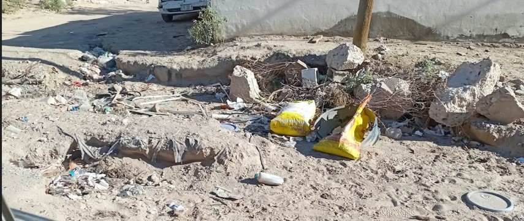
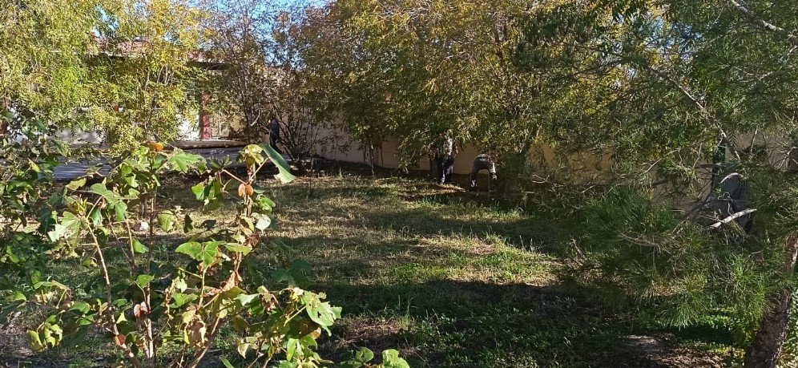

problemas ambientales
- ¿qué sucede cuado tiramos la basura incorrectamente?
- contaminación del agua,aire y suelo
- daño a animales y ecosistemas.
¿qué sucede cuado tiramos la basura incorrectamente?
Cuando tiramos la basura en lugares inadecuados, como calles, terrenos baldíos, parques
y arroyos, provocamos diferentes problemas ambientales que afectan nuestra salud y el
equilibrio de los ecosistemas.

contaminación del agua,aire y suelo
-
Contaminación del agua: La basura puede llegar a ríos, arroyos y drenajes. Además,
algunos residuos liberan sustancias tóxicas que contaminan el agua y perjudican a los
seres vivos.
-
Contaminación del aire: Cuando se quema basura, se liberan gases y partículas
contaminantes que afectan la calidad del aire y pueden causar enfermedades respiratorias.
-
Contaminación del suelo: Los residuos, especialmente los plásticos,
productos químicos y pilas, pueden liberar sustancias que deterioran el suelo.

daño a animales y ecosistemas.
-
Daño a los animales y ecosistemas: Los animales pueden confundir los plásticos con
alimentos, quedar atrapados en ellos o intoxicarse. Esto altera las cadenas alimenticias
y afecta la biodiversidad.
Inicio